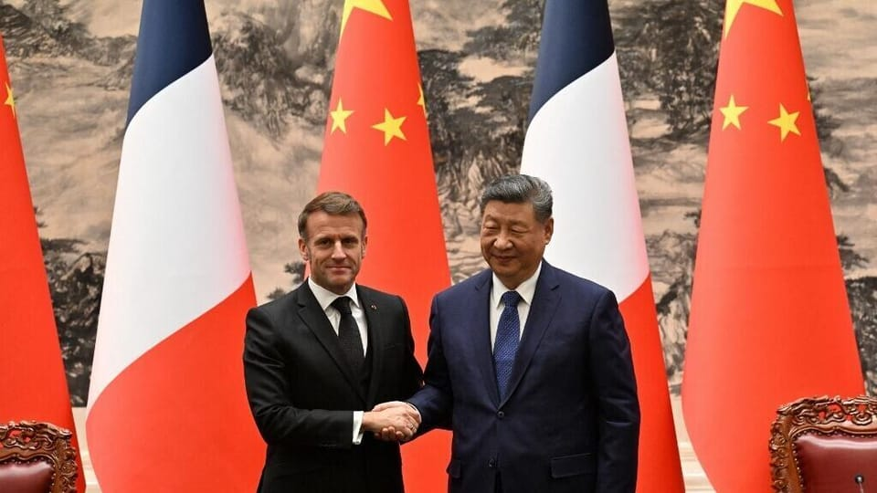

世界苦茶12月04日新闻 | 40条 | 广西自治区主席蓝天立被查

广西自治区主席蓝天立被查 | 英国再推迟中国新使馆审批 | 马克龙抵北京展开国事访问 | 台湾警方封锁小红书一年 | 美国11月私营部门失去3.2万工作岗位
苦茶数据
美元兑人民币：7.06（昨日7.06，前日7.06）
美元兑日元：154.95（昨日155.69，前日155.74）
上证指数：3875（昨日3878，前日3897)
标普500指数：6854（昨日6829，前日6812）
比特币：92438（昨日93536，前日87075）
布伦特原油：63.34（昨日62.51，前日63.13）
中国新闻
• 广西自治区主席蓝天立被中纪委审查认定。
违背新发展理念和高质量发展要求，落实中央部署打折扣、搞变通；拉帮结派，培植个人势力，投机钻营，结交政治骗子；违反组织原则，违规选任干部；家风不正，对家人失管失教；目无法纪，贪婪无度，为他人工程项目承揽、干部选拔任用等方面谋利受贿。经中央政治局会议审议，决定开除他党籍公职，移送公诉。蓝天立是二十届中央委员，开除党籍的处分需五中全会追认。
• 英国再推迟中国新使馆审批。
英国再次推迟中国新使馆审批，中国驻英国大使馆发言人星期二发声明，敦促英国尽快批准规划申请，“以免进一步损害双方互信与合作”。综合路透社和彭博社报道，英国住房、社区和地方政府事务部发通告说，因外交部和内政部迟迟未针对新使馆作出回应，决定把审批期限由12月10日推迟至明年1月20日。审批原本在10月就应有结果，但因一起涉嫌与中国有关的间谍丑闻而推迟到12月10日。这是英国第三次推迟审批。英国首相斯塔默的发言人称，调整审批时间表是“常规做法”。中国计划在伦敦塔附近一栋拥有200年历史的建筑原址上建造新使馆，由于当地居民、议员及旅英香港民主运动人士反对，计划已搁置三年。
• 王毅访俄 北京罕见提中俄就涉及日本问题“战略对表”。
中国外交部长王毅在中日关系恶化之际访问俄罗斯，先后同俄联邦安全会议秘书绍伊古及外长拉夫罗夫会面，中国官方新闻稿中罕见提出中俄“就涉日本问题进行战略对表”，引起外界关注。据中国外交部官网消息，王毅星期二在莫斯科会见拉夫罗夫时，指中俄一致同意坚定维护第二次世界大战胜利成果，坚决反对任何企图为殖民侵略翻案的倒行逆施；中俄要继续协调配合，坚决遏止日本极右势力破坏地区和平稳定、企图再军事化的挑衅行径。俄罗斯外交部称，拉夫罗夫在会面时以“亲爱的朋友”称呼王毅，称两国的主要目标是确保在国际政策事务上保持高度协调。
• 马克龙抵北京展开国事访问 中国外长王毅接机。
中共政治局委员、中央外事委员会办公室主任、中国外交部长王毅到场接机。马克龙所乘坐的飞机抵达北京机场后，他和妻子布丽吉特一同走下飞机，并接受了现场两名儿童的献花。身穿黑色风衣配红色围巾的王毅到场接机。这是马克龙2017年执政以来第四次对中国进行国事访问，也是去年中国国家主席习近平在中法建交60周年之际，对法国进行历史性国事访问的回访。马克龙访华期间，将同习近平举行会谈。根据新华网报道，双方将针对“重大国际和地区热点问题”，深入交换意见。国际媒体认为，结束乌克兰近四年的战火，将是两国领导人会谈的重要议程之一。
• 美智库报告：中国在南中国海加强情报覆盖。
美国智库一份最新的报告显示，中国在南中国海争议海域的多处岛礁升级了监视和电子作战系统，以强化防御并扩展情报能力。据彭博社报道，华盛顿智库战略与国际研究中心下设的“亚洲海事透明倡议”星期二公布研究报告，列出了过去两年中国在美济礁、渚碧礁和永暑礁的部署变化。该机构通过卫星影像发现，中国在这些岛礁上新增了雷达站、天线阵列，并加固了既有设施。AMTI的报告将美济礁、渚碧礁和永暑礁称为南沙群岛“三大”前哨基地，并指出三礁上的监测系统可为北京提供对南中国海“无可比拟的情报、监视和侦察覆盖”。同时，这些设施也能支持中国的海警和海军行动。
• 特朗普签法案深化美台关系 北京促美慎之又慎处理台湾问题。
美国总统特朗普星期二正式签署《台湾保证实施法案》，要求美国国务院定期检视并更新与台湾的交往准则并提出计划，以解除目前仍存的限制。台湾总统府星期三对此表达诚挚欢迎与感谢，台湾外交部肯定此举让“台美关系正常化有进一步发展”。中国大陆则敦促美方慎之又慎处理台湾问题，停止美台官方往来，不向“台独”分裂势力发出任何错误信号。受访台湾学者指出，此法“意义在于主权认可关系更进一步”，但“施行的时间、场地和频率是慢慢松绑”。另有学者从过去经验研判，这法案应是备而不用。《台湾保证实施法案》由共和党众议员瓦格纳，已故民主党众议员康诺利与民主党众议员刘云平于2月共同提出，5月众议院审议通过。
• 日本的高市早苗重申台湾是中国的一部分。
日本的高市早苗缓和了围绕台湾海峡数周的紧张局势 东京方面在岛屿问题上的立场未变，日本首相在一项明显的让步中表示 在周三对一名议员的回答中，高市早苗在日本国会表示，东京在岛屿问题上的立场保持不变，并提及促成北京与东京建交的1972年承诺。“日本政府关于台湾的基本立场仍与1972年《中日联合公报》中所表述的相同，该立场没有改变，”高市说道。根据1972年公报，“中华人民共和国政府重申台湾是中华人民共和国领土不可分割的一部分”，日本政府“充分理解并尊重这一立场”。公报还称日本“坚守《波茨坦公告》第八条所载立场”。连同规定日本应将战争期间从中国夺取的领土归还的1943年11月《开罗宣言》。
• 中国军方发布新规，要求“将严格的政治纪律放在首位”。
中国军方发布新规“优先确保严明政治纪律” 最新修订将于1月生效，在北京反腐运动背景下出台，近月导致数名高级将领落马。中国军方制定了新规以加强政治纪律和党性忠诚，誓言铲除“错误的政治观点和不当言论”以及“虚假的战斗力”。对中共纪律处分条例实施细则的补充修订将于2026年1月1日生效，这是持续反腐行动的一部分，近月已导致数名高级将领倒台。周一，人民解放军机关报《解放军报》称，新规将“把严明政治纪律和规矩放在首位”。根据变更，纪律违规现已明确包括发表“错误政治言论”。
• 中国敦促英法两国在中日争端中支持北京。
中国敦促英法两国在中日争端中支持北京 广告 北京声称自治的台湾是中国领土的一部分，对此作出了激烈回应。它指责高市早苗越过了“红线”，并要求她收回这一言论，同时敦促数百万中国游客避免前往日本旅游，取消了数百个航班，并禁止进口日本海产品。就连日本艺人在中国的演出也突然被取消——上周上海某场演出甚至在演唱中途被叫停。中国上月致函联合国秘书长古特雷斯，指责高市早苗违反国际法，并表示该信函将散发给各成员国。中国最高领导人习近平致电特朗普总统，暗示两国曾在二战中“并肩抗击法西斯和军国主义”，应共同抵制日本。早在高市早苗这番言论之前，习近平就已加大对台湾及其总统赖清德的施压力度。
印太新闻
**• 台湾警方12月4日发布网络管制命令，封锁小红书一年。包括停止DNS解析、限制IP地址接取，预计在数小时内完成实施。 **
发布会说：小红书在台用户300万人，诈骗案去年有950件、损失新台币1.33亿元，今年1至11月756件、1.15亿元，类型有假网拍、解除分期付款、假投资、假交友、色情应召诈财等。警方办案无法调取必要资料，难以侦办，形成实质法律真空。新闻稿说：Meta、Google、LINE、TikTok等均已在台设置法人、履行反诈义务，其余平台也应主动配合。政府10月14日通过海基会去函小红书（上海行吟）公司，令其提出具体改善作为、接受中华民国法律管辖，并限期20日回复，但没有收到回音，遂决定依《诈欺犯罪危害防治条例》第42条授权发出封锁命令。
• 德里在有毒空气中记录到20万例急性呼吸道疾病病例。
印度首都德里联邦政府表示，随着污染水平上升，2022年至2024年间德里六家公立医院共记录了超过20万例急性呼吸道疾病病例。政府在议会中称，这三年里有超过3万人因呼吸道疾病住院。有毒空气是德里及郊区的反复出现的问题，尤其在冬季。数周来，德里的空气质量指数——衡量包括PM2.5在内的不同污染物的指标，PM2.5是一种能堵塞肺部的细颗粒物——一直高于世界卫生组织建议限值20倍以上。造成这一问题的原因并非单一，而是多种因素综合作用的结果，如工业排放、汽车尾气、气温下降、风速偏低以及邻近各邦季节性焚烧农作物秸秆等。
• 日美11家企业起诉美国政府，要求返还加征关税。
日美11家企业起诉美国政府，要求返还加征关税 2025/12/03 日本经济新闻12月2日获悉，美国零售大企业Costco Wholesale 、住友化学、理光和丰田通商等日美企业已分别起诉美国政府，要求返还川普政府加征的关税。截至12月2日，至少有9家日资企业和2家美国企业向位于美国东部纽约、专门处理贸易案件的美国国际贸易法院提起诉讼。在美国，联邦最高法院正在审理川普政府的对等关税的合宪性。各企业发起诉讼的目的是，若联邦最高法院作出违宪判决，企业可获得已缴纳的关税的返还。美国总统川普以紧急情况下限制经济交易的《国际紧急经济权力法》为依据，在没有得到美国国会批准的情况下。
• 李在明称南韩将对中日对立保持中立。
南韩总统李在明12月3日面向海外媒体召开记者会，就日本和中国的外交关系发表观点称，「南韩站队任何一方都会成为加剧对立的原因」，强调南韩将采取中立立场。以日本首相高市早苗做出有关台湾有事的国会答辩，以及中国驻大坂总领事薛剑在社交平台上发文为契机，中日关系出现恶化。李在明还表示：「如果存在能够斡旋之处，希望能够发挥相应作用」。12月3日是南韩前总统尹锡悦宣布紧急戒严满一年的日子，李在明在此时面向海外媒体召开了记者会。这是他2025年6月就任总统以来首次仅面向外国媒体举行记者会。
科技新闻
• 中国发射首枚可重复使用运载火箭朱雀三号，但回收尝试未能成功。
中国首枚可回收火箭朱雀三号首飞未能回收 设计方蓝箭空间表示正在调查，因为火箭下级在靠近回收区坠落前疑似起火 美国仍是全球唯一成功回收轨道级助推器的国家，尽管中国与其他国家的后续发射仍在争夺第二名。由北京商业航天公司蓝箭设计的可回收火箭于周三中午从中国西北的酒泉卫星发射中心发射。进入近地轨道后，火箭第一级——将运载器从地面提升起飞的下段——在空中疑似起火，随后在目标回收点附近坠落。蓝箭在社交媒体上称，第一级在着陆阶段“发生异常”，“未能在回收平台上实现软着陆”。“残骸落在回收平台边缘，导致回收测试失败。具体原因正在进一步调查。
• 智利成为最新一个在课堂上禁止使用智能手机的国家。
智利通过了一项法案，禁止在小学和初中课堂上使用手机及其他智能设备。该新法将于明年生效，使智利成为最新一个限制青少年在校使用智能手机以减少其有害影响并遏制课堂干扰的国家。法国、巴西、匈牙利、荷兰和中国等国对学校内智能手机的使用也有不同程度的限制。教育部长尼古拉斯·卡塔尔多在决议通过后于社交媒体上写道：“我们正在推进一种文化变革，让当下的儿童和青少年比以往任何时候都更需要重新看到彼此的面孔，在课间互动，并恢复专注以进一步促进学习。” 参议院今年早些时候已原则性通过了学校手机禁令，但对法案做出若干修改，这些修改于周二晚在下院进行了表决。经过辩论，议员们以压倒性多数支持了更新后的立法。
• 澳大利亚将禁止16岁以下儿童使用社交媒体。
澳大利亚正对16岁以下青少年实施社交媒体禁令。如何执行？自12月10日起，澳大利亚16岁以下人群将被禁止使用包括抖音，X，Facebook，Instagram，YouTube，Snapchat 和 Threads 在内的主要社交媒体服务。他们不得新建账户，现有账户也必须停用。这一禁令是首创，正受到其他国家的密切关注。澳大利亚政府为何对16岁以下者禁用社交媒体？政府称，此举将减少社交媒体“鼓励[青少年]更多使用屏幕的设计特性，同时推送可能损害其身心健康的内容”所带来的负面影响。政府在2025年初委托的一项研究发现，96%的10至15岁儿童使用社交媒体，其中七成曾接触到有害内容，包含厌女。
• YouTube 表示，澳大利亚的社交媒体禁令将使儿童更不安全。
YouTube 表示，澳大利亚对未成年人社交媒体的新禁令“仓促”出台，将导致儿童更不安全，因为其“强大的家长控制”将被剥夺。家长将从 12 月 10 日起“失去监管其青少年或学童账号的能力”，例如内容设置或屏蔽频道等功能，因为针对 16 岁以下者的社交媒体禁令生效后，孩子仍然可以在无账号的情况下观看视频。通信部长阿妮卡·威尔斯回应称，YouTube 强调其平台对儿童存在危险是“相当奇怪”的行为。“如果 YouTube 在提醒大家它不安全那是 YouTube 需要解决的问题，”威尔斯在周三表示。
• 特朗普提名的NASA人选誓言美国将抢在中国之前重返月球。
贾里德·艾萨克曼在参议院确认听证会上表示，美国必须迅速行动以在日益激烈的太空探索竞争中领先北京。艾萨克曼周三在听证会上说，美国将加倍努力，确保比中国更早重返月球，并在地球的天然卫星上建立持久存在，以巩固国家利益。“美国将在我们的伟大竞争对手之前重返月球，并将建立持久存在，以理解并实现月球表面的科学，经济和国家安全价值，”这位曾在2021年担任首个全平民太空飞行指挥。
• 寒武纪计划将芯片产量提高三倍 力争在中国取代英伟达产品。
寒武纪计划在2026年将其AI芯片产量提高三倍以上，目标是从华为手中夺取中国市场份额，并填补英伟达退出后留下的空白。寒武纪计划明年交付50万块芯片，其中30多万块其最先进的思源590和690芯片，将主要采用中芯国际最新的“N+2”7纳米制程工艺。寒武纪能否达成这些目标，在很大程度上不仅取决于AI的发展速度，还取决于其能否在中芯国际确保产能。作为参考，高盛估计，寒武纪今年仅将生产14.2万颗人工智能芯片。中芯国际自身的技术可能成为障碍。知情人士表示，就寒武纪高端的思源590和690芯片而言，该公司目前仅能实现20%的良率。
经济新闻
• 经合组织预测26年全球经济增2.9%，中国4.4%。
经济合作与发展组织在12月2日发布的经济展望报告中预测称，2026年全球经济增长率为2.9％。2025年经济增长率预期为3.2％，两年的数据均维持了9月发布的上次的预测值。美国与中国达成的关税协议等因素被认为将为全球经济增长提供支撑。经合组织最初曾担忧新一轮关税可能导致以美国为中心经济增速大幅下滑。随着美国与中国及欧盟就关税谈判达成协定，这一风险正在消退。不过，经合组织预测，美国上调关税带来的全球性影响今后将会显露，2026年全球经济增速将相较于2025年有所放缓。
• 特朗普称关税最终可以取代联邦所得税，专家表示不同意。
总统唐纳德·特朗普长期以来一直推崇关税，认为其是增加美国财富的关键，理想化地看待先于现代联邦所得税实施的镀金时代政策。特朗普声称的潜在好处之一，是用美国从关税中获得的收入来替代联邦所得税的税收——这是他自2024年总统竞选以来多次宣扬的观点，最近一次出现在周二的内阁会议上。但关税收入与若要取消联邦所得税所需的规模相差甚远，专家表示这样的方案根本不可行。以下是更详细的事实核查。
• 欧盟推出行动计划 降低对中国稀土依赖。
欧盟推出行动计划 降低对中国稀土依赖 2025年12月3日欧盟周三发布了一份行动计划，以解决对中国稀土依赖的问题。欧盟还计划成立一个“欧洲关键原材料中心”，协调原材料有关的战略行动。周三，欧盟发布计划，旨在结束对中国稀土的依赖。北京10月宣布对稀土新的出口管制后，引发市场动荡。北京之后表示暂停一年实施。自4月起，北京就已要求特定的出口需许可证。欧盟工业委员塞茹尔呼吁成员国加大力度，打击他所称北京的“勒索”。新计划旨在推动欧盟加速联合购买关键原材料，包括稀土，加快在欧洲的生产与回收，与可靠伙伴合作并结成新的伙伴关系。欧盟下周也将提议创建一个欧洲关键原材料中心，作为欧洲的供应枢纽。
• 从头再来：欧盟重启停滞的对华去风险计划。
欧盟在稀土控制力和产能过剩风险面前重启对华“去风险”计划 旨在增强经济手段同时削减对中国依赖的两项提案，正值这个由27国组成的集团在贸易战时代为生存而奋斗之际推出。周三发布的蓝图将共同升级欧盟的经济工具箱，并解开其对关键矿产的高度依赖。第一项是一份关于经济安全的沟通文件，将为欧盟提供一个“运行体系”，以管理其众多的贸易、竞争和经济手段——这些手段可用于反制胁迫、欺凌或将依赖关系武器化的行为。在两年半前发布的首个经济安全战略基础上，该文件将把欧洲委员会与27个成员国长期对被视为关键领域的风险评估付诸行动。一个新的欧盟情报中心将实时追踪经济威胁——监测中国或其他国家是否试图破坏欧洲减少依赖的努力。
• 对11月就业情况的初步观察显示，私营部门失去了3.2万个工作岗位。
在经济走弱，成本上升和消费者反复无常的影响下，小企业开始出现动摇，它们在11月推动了美国私营部门的就业流失，工资平台巨头ADP周三报告称。ADP最新的私营部门就业月度报告显示，上月约减少了3.2万个岗位，较10月经上调后的增加4.7万个岗位出现回落。由于美国历史上最长的政府停摆削弱了统计机构收集，分析和发布经济数据的能力，ADP的报告近期受到更多关注。原定于周五发布的11月就业报告已推迟至12月16日，同时还将包含10月的部分数据——当月的完整就业报告被取消。因此，周三的ADP数据很可能成为联储官员在下周政策会议前对劳动力市场的次优估计。尽管ADP的统计数据与官方就业数字经常不一致。
• 瑞银预测，随着贷款违约上升，中国将出现240万宗房产止赎。
瑞银预计到2027年将有240万宗止赎案件，贷款违约上升 瑞士银行中国房地产研究负责人林皓周周二表示，中国大陆房价下跌和经济疲弱可能导致贷款违约增加，进而带来大量被没收的房产，并进一步延长持续多年的低迷局面。林皓周称，到2027年，银行从小微企业手中没收的公寓可能超过240万套。大陆多数小微企业以房产作抵押贷款。林皓周指出，这些被拍卖的抵押房产的出售每年可能影响大约四分之一的新房销售，并进一步压低二手房价格。他补充称，这是“我们关注的一个关键风险”。自新冠疫情以来，中国加大了对小微和个体经营者的经营性贷款投放以予以支持。林皓周表示，截至9月底，未偿贷款余额为36.1万亿元人民币。
俄乌战争
• 欧盟公布两种方案，在未来数年向乌克兰筹措900亿美元。
欧洲委员会主席乌尔苏拉·冯德莱恩公布了两种为乌克兰在未来两年筹资的方案，此时基辅正面临生死存亡的资金短缺。在布鲁塞尔的新闻发布会上，冯德莱恩表示，第一种方案是欧洲各国共同借款并将款项贷给乌克兰。若要推进该计划，所有27个成员国必须一致通过。第二种方案是长期搁置的“赔偿贷款”倡议，即将被冻结的俄罗斯央行储备借给乌克兰。只有在俄罗斯向乌克兰支付赔偿的情况下，乌克兰才需偿还这笔钱。第二种方案只需“合格多数”通过——至少15个国家，代表欧盟65%人口。冯德莱恩表示，这笔资金将给乌克兰“以强势地位主导和平谈判的手段”。若不获得额外财政支持，乌克兰将在2026年年中耗尽现金。
• 碎片化的制裁如何延长战争并壮大俄罗斯的国防工业。
支离破碎的制裁如何拖长战争并壮大俄罗斯国防工业 俄罗斯总统弗拉基米尔·普京于2024年2月15日访问乌拉尔主要坦克工厂乌拉尔瓦贡扎沃德，地点在俄罗斯下塔吉尔。关于作者：玛丽亚·楚赫诺娃是位于弗吉尼亚亚历山大市的国际安全智库“关键质量”的一名国际安全与稳定专家。距俄罗斯对乌克兰的全面入侵近四年，其军工复合体几乎不受影响地持续运转。尽管实施了多轮制裁与出口管制，莫斯科的国防工厂仍全速运转，导弹、坦克、无人机与弹药的产量持续增长。西方制裁规模与其对俄罗斯战争经济实际影响之间存在巨大差距——而且这种差距具有危险性。
• 欧盟委员会将于2026年初提出对俄石油禁令提案。
据POLITICO获得的一份文件，欧盟委员会将于明年年初起草一项针对俄国石油进口的立法禁令，此举标志着欧盟议员与成员国之间紧张谈判取得突破。欧洲议会一直要求欧盟执行机构在一项针对俄国天然气进口的单独禁令中纳入逐步淘汰石油的计划，该禁令目前正处于议会与成员国之间的最后时刻讨价还价阶段。但双方在此举的法律和技术影响上存在分歧，使快速达成协议的希望受挫。不过在周二深夜的会谈中，欧盟执行机构提出了一个折中方案，正式承诺将提交一项禁止进口俄国原油的提案，时间为“尽快，但不晚于2027年底”，这是该提案的打印稿所述。此举可能为就俄国天然气禁令达成协议铺平道路。立法禁令被认为比现行需每六个月续期。
• 波克罗夫斯克落入俄罗斯掌控，姐妹城市濒临被包围。
顿涅茨克州波克罗夫斯克被俄罗斯控制，其姐妹市面临包围威胁 2024年9月9日，俄罗斯军队摧毁的一座桥梁，位于顿涅茨克州波克罗夫斯克。就莫斯科而言，乌克兰的要塞城市波克罗夫斯克已正式沦陷。自俄罗斯军队五周多前开始向该州南部郊区涌入以来，波克罗夫斯克已被决定性攻占，尽管基辅仍声称在市区内有存在。鉴于夺取该市的政治意义，这一说法首先由俄罗斯总统弗拉基米尔·普京在12月1日提出，当时他听取了最高将领瓦列里·格拉西莫夫关于最新战况的汇报。同日，俄罗斯国防部上传了一段视频，显示俄军士兵悠闲地穿行于波克罗夫斯克市中心，并在希班科娃广场挂起国旗。俄国宣发主持人玛格丽塔·西蒙尼扬在其个人X账号转发该视频。
• 独家无人机画面显示，被严重摧毁的乌克兰城镇几乎被俄军包围。
独家无人机画面显示乌克兰城镇遭毁灭性破坏，几近被俄军包围 基辅，乌克兰 — 美联社周三获取的独家无人机画面显示，位于靠近莫斯科本周声称现已控制的城市附近的乌克兰城镇遭到严重破坏，几近被俄军包围。位于乌克兰东部顿涅茨克地区、距重要后勤枢纽波克罗夫斯克约12公里的米尔诺格勒，几乎没有一条街道幸免。画面中有些破坏如此新鲜，数天内拍摄时仍有烟雾升起。“他们试图把这个城镇从地球上抹去，”第38海军旅无人机营新闻官奥列克希·霍杰年科说，该旅士兵周三仍在米尔诺格勒内作战。根据广泛被军方和分析人士使用的开源乌克兰地图DeepState，该镇几乎被俄军包围。霍杰年科称，尽管乌军仍有撤离通路。
• 在基辅对一名极右派欧洲议会议员表示强烈不满后，欧洲议会取消了访乌克兰行程。
在乌克兰当局反对一名极右翼德国政客随团出访后，欧洲议会代表团原定的基辅之行被取消。欧洲议会安全与防卫委员会的议员们原计划于12月1日赴乌克兰访问。但乌克兰官员就德国另类选择党成员汉斯·诺伊霍夫被列入代表团一事向议会表达了“安全”担忧。随后行程被取消，诺伊霍夫和两名不愿公开发言的议会官员告诉波利蒂科。
• 俄军精锐无人机部队如何威胁要终结乌克兰在前线的制空优势。
“俄罗斯人真会规模化”——莫斯科如何建成一套无人机体系，现威胁要终结乌克兰在前线的空中主导地位 新的俄罗斯无人机举措侵蚀了乌克兰在无人机战争中的早期优势，正在重塑空中争夺战 一段于2025年11月28日发布的视频中，在未指明地点被俄方拦截器瞄准的据称是乌克兰DJI Mavic无人机。一个不幸的现实正在前线显现并传入基辅：在无人机方面，乌克兰实际上已经失去了曾经艰难争取到的对俄罗斯的优势。
• 民调显示，乌克兰人对北约成员资格作为安全保障的信任下降。
根据Info Sapiens机构进行并由基辅智库新欧洲中心于12月3日公布的一项调查，约19.4%的乌克兰人认为潜在加入北约是最好的安全保障，比去年下降了10%。多数受访者认为乌克兰发展自己的核武器——这一想法此前被基辅拒绝——是最好的保障，新欧洲中心表示，这凸显了“乌克兰人对国际支持的失望”。该研究发布之际，美国正对乌克兰施加新压力，要求其接受与莫斯科的和平协议，哪怕需做出痛苦让步；同时欧盟在为基辅制定长期资助计划方面难以达成共识。调查要求受访者选择哪种安全保障最为有效，其中一个选项是加入北约，条件是盟友的保护仅覆盖乌克兰控制的领土。
世界新闻
• 德国极左派让梅尔茨在养老金问题上免于可能的尴尬。
德国总理弗里德里希·梅尔茨领导的保守派联合政府意外地从一个不太可能的地方获得了一次未经请求的政治救命稻草——但这并非没有代价。德国极左政党左翼党周三宣布，该党议员将在周五就一项养老金方案的表决中弃权，这实际上确保了该方案将获通过，可能使梅尔茨免于一场本会进一步削弱他本已脆弱联合政府的羞辱。左翼党领导层的这一表态，恰逢梅尔茨正试图平息其保守派阵营内部18名年轻议员的反叛，该等议员认为当前的养老金福利不可持续。由于梅尔茨的联合政府在议会中仅拥有12票的微弱多数，养老金方案的通过一度成疑。
• 特朗普表示他将赦免涉及贿赂案的民主党众议员。
特朗普称将赦免涉受贿案的民主党众议员 美国总统唐纳德·特朗普表示，他将赦免去年因涉嫌接受约60万美元贿赂而被起诉的民主党众议员亨利·奎利亚尔。特朗普在社交媒体上称，他将对这位德克萨斯州众议员及其同样被起诉的妻子伊梅尔达·奎利亚尔发出“完全且无条件”的赦免。“亨利，我不认识你，但你今晚可以睡个好觉——你的噩梦终于结束了！”这位共和党总统写道。他还表示，他认为奎利亚尔是因为“勇敢地反对开放边界”而被前总统乔·拜登起诉。奎利亚尔夫妇在被起诉后已获得保释，二人均坚持无罪。周三上午，奎利亚尔以民主党身份提交了连任申报，打消了外界关于他可能改投共和党以增加众议院共和党微弱多数的猜测。
• 特朗普政府暂停来自19个国家的移民申请。
国土安全部在两名国民警卫队成员遭一名阿富汗籍者枪击后，进一步收紧移民申请处理。美国公民及移民服务局周二在一份备忘录中表示，将暂停审理来自此前旅行禁令所列19个国家的所有待审绿卡，入籍或庇护申请。特朗普总统在六月宣布对12国实施旅行禁令，并对另外7国实施部分限制，此举是在科罗拉多发生一起汽油弹袭击后采取的。该公民与移民机构还计划对来自这些国家的移民进行重新审查并重新面谈，审查范围可能追溯至2021年。
• 意大利时尚巨头普拉达以折扣价收购范思哲。
意大利时尚巨头普拉达以折扣价收购范思哲 普拉达周二宣布已收购范思哲，将两大意大利奢侈时尚品牌纳入旗下。这笔13.8亿美元的交易远低于范思哲前母公司卡普里控股2018年为该品牌支付的大约20亿美元。此次收购扩展了普拉达的设计师品牌组合——包括Miu Miu——以期与法国巨头LVMH等竞争对手抗衡，后者除了路易威登外还拥有迪奥和芬迪等品牌。传奇设计师多纳泰拉·范思哲在担任该品牌创意总监27年后，于3月辞职。范思哲以其华丽风格和标志性的美杜莎头像标识闻名，她在1997年其兄弟詹尼被谋杀后接管公司。她的继任者是达里奥·维塔莱，曾任普拉达旗下主攻年轻市场的奢侈品牌Miu Miu的设计总监。
• 欺诈调查可能将欧盟推入数十年来最严重的危机。
乌尔苏拉·冯德莱恩正面临对欧盟问责制的近代最严峻挑战——一起欺诈调查牵连了布鲁塞尔两位最知名的人物，并有可能演变为一场全面危机。就在她担任欧盟委员会主席第二个任期整整一年的时候，冯德莱恩在其对透明度承诺受到质疑、并与欧盟外交政策部门关系持续紧张的背景下，现在必须想办法避免被卷入一宗可追溯到她任职早期的丑闻。欧洲公共检察官办公室宣布，欧盟前外交事务负责人与一名目前在冯德莱恩委员会任职的高级外交官周二被拘留的消息，被其批评者趁机放大，并再次呼吁对她进行第四次不信任投票。
• 在洪都拉斯选举胶着、领先屡次易手之际，特朗普会无法如愿吗。
在洪都拉斯选举领先数次易手之际，特朗普会不会没如愿以偿？在已计票略超三分之二的情况下，领先者易位。前副总统萨尔瓦多·纳斯拉拉以微弱但可能具决定意义的优势领先保守派前特古西加尔帕市长纳斯里·阿斯富拉。尽管如此，阿斯富拉所属的民族党仍不断向记者宣称他们掌握最后获胜的票数。选情仍在刀锋上。在华盛顿，总统唐纳德·特朗普把希望押在阿斯富拉的明确胜利上，并试图直接干预选情以支持他偏好的候选人。不论是暗示可能会对这个贫穷的中美洲国家扣留资金，还是提出未经证实的选举舞弊指控，洪都拉斯的许多人都看到美国总统在这次选举中的影子。